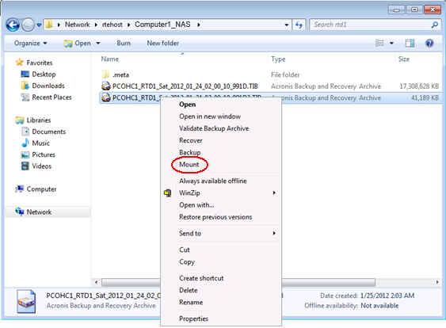
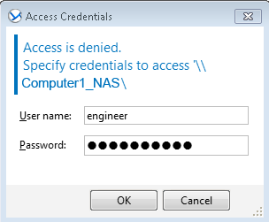
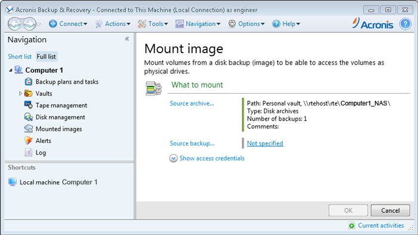
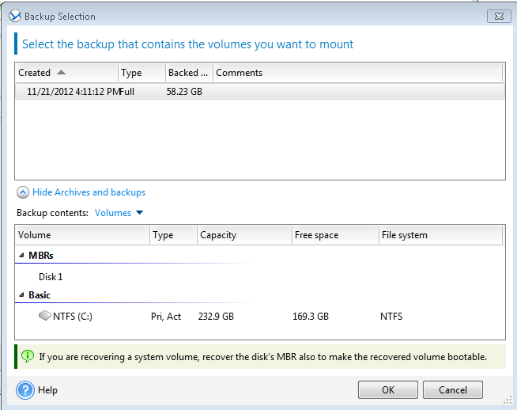
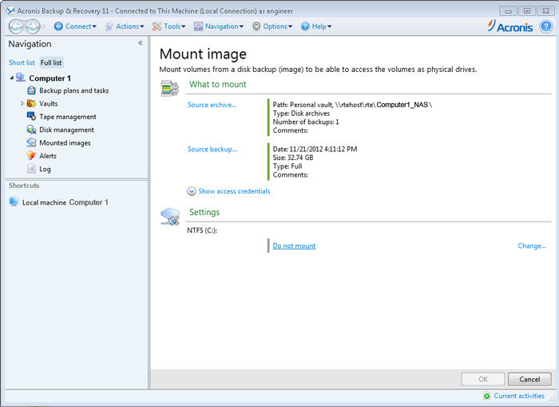
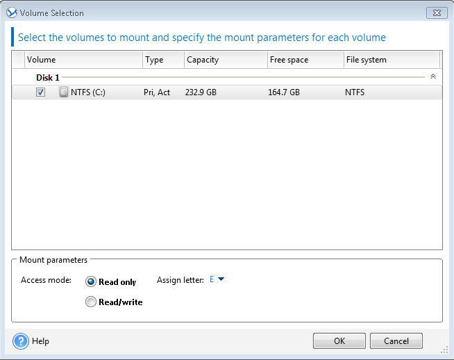
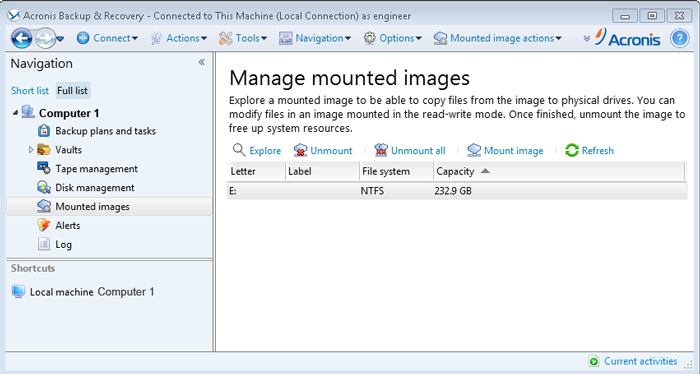
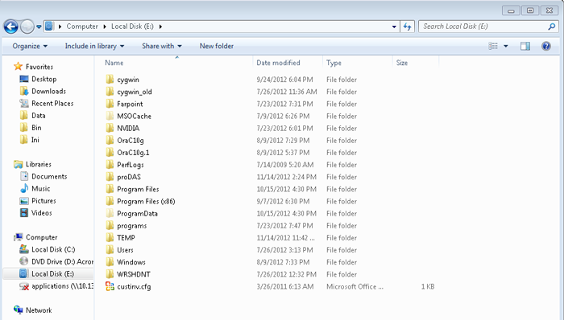

How To – Recover Data on a Windows based Computer by Mounting an Image
This How To provides the steps required to perform data recovery on a Windows based computer by mounting an image of the hard drive and copying the required files to the local hard drive.
To Recover Data by Mounting an Image
- Log into the Management GUI Computer as Administrator. See Starting Acronis Backup and Recovery Advanced Workstation with Universal Restore from Windows.
- Using Windows Explorer, browse the available Acronis Backup images located at \\Network\Computer1_NAS
- Select a backup image and right click on the selection.
- Select Mount from the context menu, as shown in the image below.

The Access Credentials window is displayed.
- In the Access Credentials window, login as engineer, enter a password for the engineer's account and select OK.

The Acronis Backup & Recovery application opens and the Mount image panel is displayed.
- In the Mount image panel, select Source backup.

The Backup Selection window is displayed.
- In the Backup selection window, select a backup.
If the file to be recovered was deleted between Saturday and Sunday, select the Saturday backup. Otherwise, select the Sunday full backup to obtain the list of available files.

- Click OK to close the Backup Selection window and return to the Mount image panel.

- In the Settings section of the Mount image panel, select Change.
The Volume Selection window is displayed.

- Select the checkbox of the drive partition (in this example, NTFS(C:)).
- In the Mount parameters panel, use the drop-down menu to assign a letter to the new virtual drive.
- Click OK to close the Volume Selection window and to return to the Mount image panel.
- Click OK.
The Manage mounted images panel is displayed.

- In the Manage mounted images panel, select Explore.
The virtual drive containing the mounted files is displayed.

- Select and copy the desired files from the virtual drive (in this example, drive E:) to the desired target folder.
- Unmount the virtual drive E: by selecting the virtual drive letter and clicking Unmount in the Manage mounted images panel.
To restore a file from an incremental backup, the referenced full backup is also required.
For more information see, the Acronis Backup and Recovery Advanced Workstation with Universal Restore User Guide.